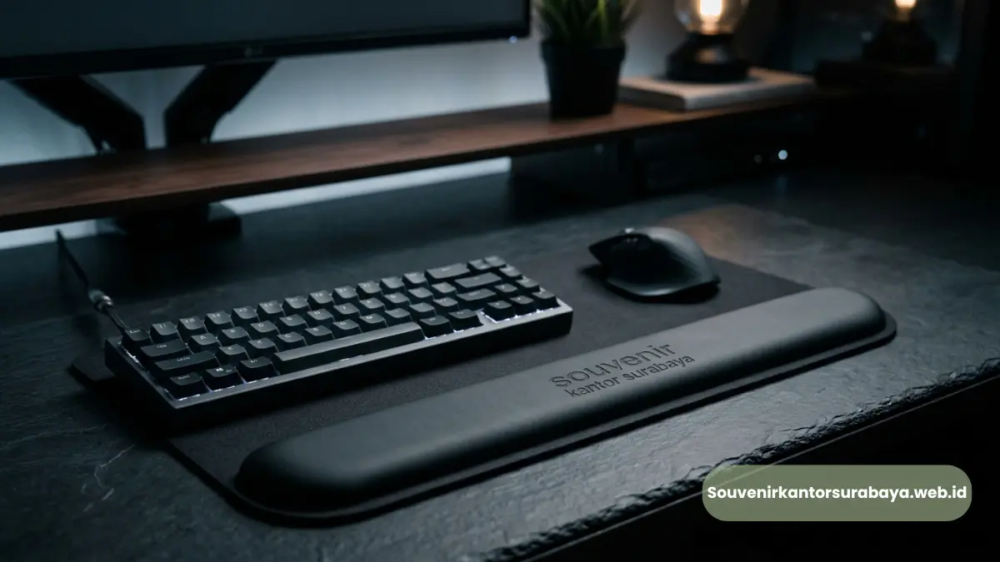

Mouse pad ergonomis custom logo untuk kantor di Bandung cocok untuk perusahaan yang membutuhkan merchandise fungsional.
- Mengapa Mouse Pad Menjadi Merchandise Kantor yang Praktis?
- Bagaimana Mouse Pad Custom Logo Mendukung Identitas Brand?
- Model Mouse Pad Apa yang Dapat Digunakan?
- Bagaimana Memilih Desain untuk Employee Gift?
- Bagaimana Mouse Pad Dapat Menjadi Bagian dari Acara Perusahaan?
- Mengapa Ergonomi Tidak Hanya Bergantung pada Mouse Pad?
- Pesan Souvenir Corporate
Mouse pad ergonomis custom logo untuk kantor di Bandung cocok untuk perusahaan yang membutuhkan merchandise fungsional dengan identitas brand yang dapat digunakan langsung pada meja kerja.
- Mouse pad dapat menjadi souvenir kantor sekaligus aksesoris workstation.
- Custom logo membuat produk relevan untuk branding perusahaan.
- Model dengan palm rest dapat dipertimbangkan untuk kebutuhan workstation tertentu.
- Produk dapat digunakan sebagai employee gift, merchandise acara, atau hadiah relasi bisnis.
Mengapa Mouse Pad Menjadi Merchandise Kantor yang Praktis?
Mouse pad menjadi merchandise praktis karena fungsi produknya berkaitan langsung dengan penggunaan komputer.
Perusahaan dapat memberikan produk sebagai employee gift, merchandise seminar, paket onboarding, hadiah anniversary, atau cinderamata kantor.
Produk yang digunakan secara rutin mempunyai konteks corporate gifting yang kuat karena penerima dapat langsung menggunakannya setelah menerima hadiah.
OSHA menjelaskan bahwa mouse perlu ditempatkan dekat keyboard dan digunakan dengan posisi pergelangan yang lurus dan netral untuk membantu mengurangi postur yang tidak ideal.
Bagaimana Mouse Pad Custom Logo Mendukung Identitas Brand?
Mouse pad custom logo mendukung identitas brand melalui penempatan logo dan elemen visual perusahaan pada produk yang digunakan sehari-hari.
Warna korporat dapat digunakan untuk memperkuat konsistensi visual. Logo dapat ditempatkan pada area yang terlihat tanpa mengganggu pergerakan mouse.
Brand identity dapat diterapkan pada mouse pad, notebook, tumbler, pulpen, pouch, dan kemasan apabila produk tersebut dibuat sebagai satu gift set kantor.
Untuk menghasilkan souvenir korporat elegan, perusahaan tidak harus menggunakan desain kompleks. Komposisi sederhana dengan logo proporsional dapat menghasilkan tampilan profesional.

Model Mouse Pad Apa yang Dapat Digunakan?
Model mouse pad dapat dibedakan berdasarkan ukuran, material, desain permukaan, struktur penyangga, dan metode personalisasi.
Mouse pad datar cocok untuk kebutuhan merchandise sederhana dan mudah dipadukan dengan notebook serta pulpen. Model dengan palm rest dapat dipertimbangkan untuk kebutuhan meja kerja yang menginginkan dukungan telapak atau pergelangan.
Model berukuran lebih besar dapat dipertimbangkan untuk workstation yang membutuhkan area gerak lebih luas.
Perusahaan dapat menyesuaikan model dengan penerima. Employee gift untuk staf komputer dapat menggunakan desain fungsional, sedangkan merchandise event dapat lebih menonjolkan identitas visual perusahaan.
Bagaimana Memilih Desain untuk Employee Gift?
Desain employee gift sebaiknya dibuat praktis, profesional, dan mudah digunakan dalam lingkungan kerja.
Logo perusahaan dapat menjadi elemen utama. Warna korporat dapat digunakan sebagai aksen agar produk tetap memiliki identitas brand tanpa terlihat terlalu ramai.
Untuk karyawan baru, mouse pad dapat digabungkan dengan notebook, pulpen, tumbler, dan pouch sebagai paket onboarding.
Untuk program apresiasi, perusahaan dapat menggunakan kemasan khusus dengan kartu ucapan atau tema program internal.
Bagaimana Mouse Pad Dapat Menjadi Bagian dari Acara Perusahaan?
Mouse pad dapat digunakan sebagai merchandise untuk seminar, workshop, training, gathering, anniversary, dan kegiatan perusahaan lainnya.
Untuk seminar, mouse pad dapat dimasukkan ke dalam paket peserta. Untuk training internal, produk dapat diberikan sebagai bagian dari perlengkapan kerja.
Untuk anniversary, desain dapat dibuat mengikuti tema acara. Perusahaan juga dapat menggunakan satu desain produk untuk beberapa kegiatan selama periode tertentu sehingga identitas merchandise tetap konsisten.
Melayani kebutuhan mouse pad custom untuk perusahaan di Bandung dapat menjadi solusi bagi perusahaan yang ingin menggabungkan merchandise kerja dengan branding.
Mengapa Ergonomi Tidak Hanya Bergantung pada Mouse Pad?
Mouse pad merupakan salah satu bagian dari workstation sehingga kenyamanan tidak dapat ditentukan oleh produk secara terpisah.
OSHA menjelaskan bahwa posisi keyboard, mouse, meja, kursi, dan monitor perlu diatur bersama untuk membantu mempertahankan postur netral.
OSHA juga mencatat bahwa pengguna komputer dapat melakukan lebih dari 18.000 keystroke per jam dalam pekerjaan tertentu, sehingga aktivitas komputer dapat melibatkan gerakan berulang dalam jumlah tinggi.
Istilah ergonomis pada merchandise sebaiknya digunakan secara bertanggung jawab. Produk dapat dirancang untuk mendukung kenyamanan penggunaan, tetapi hasil penggunaan setiap orang dapat berbeda.
Pesan Souvenir Corporate
Jika Anda membutuhkan mouse pad ergonomis custom logo untuk kantor di Bandung, Seminarkit Jogja siap membantu kebutuhan corporate gifting, employee gift, merchandise event, dan branding perusahaan. Hubungi Seminarkit Jogja untuk melihat katalog produk merchandise, membahas opsi custom logo perusahaan, dan menyiapkan paket souvenir yang sesuai.

Hawa Nadira
Tim penulis CorporateGifts ID berfokus pada strategi souvenir kantor, merchandise korporat, dan inovasi brand untuk klien B2B.
Keahlian: Branding perusahaan, produksi souvenir, paket event, desain materi promosi.
Artikel Terkait

Mouse Pad Ergonomis Custom Logo Jakarta
Mouse pad ergonomis custom logo untuk kantor di Jakarta, cocok sebagai employee gift dan merchandise.
Baca Selengkapnya
Souvenir Kantor Surabaya
Cari souvenir kantor Surabaya premium & custom logo untuk klien, karyawan, dan event?
Baca SelengkapnyaCustom Logo Souvenir Kantor
Custom logo pada souvenir kantor untuk memperkuat identitas brand perusahaan Anda.
Baca Selengkapnya